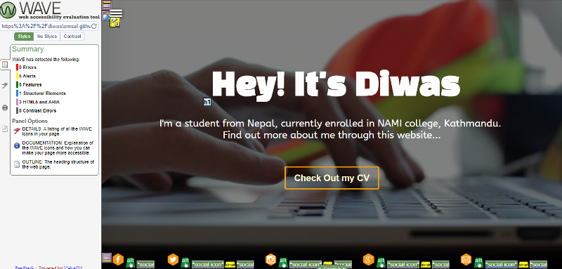
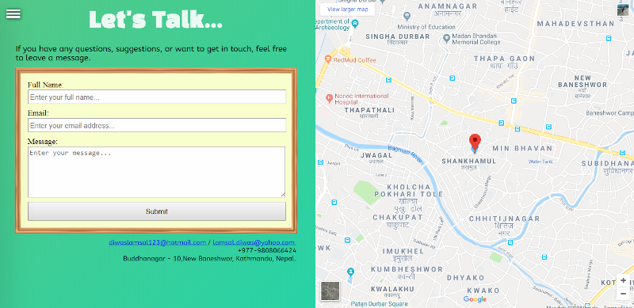

|

|
CSY1018
Web Development
Assignment 1
Semester 1 2017/18
|
|
Words:
|
AS1- CV Website
(design & implement)
(2,500 words or equivalent)
|
|
Weighting:
|
50%
|
|
Credit Value:
|
20 credits
|
|
Learning Outcomes Assessed:
|
a, b, c, d, e, h
|
|
Submission date:
|
Sunday April 22
nd
2018, 23:59
|
|
Feedback and Grades due:
|
4th February 2018
|
|
Module Leader:
|
Ganesh Khatri
(ganesh.khatri@nami.edu.np)
Liz Coulter-Smith
(liz.coulter-smith@northampton.ac.uk)
|
|
Electronic copy available:
|
NILE
|
Introduction
The CSY 1018 - Web Development Term I has the primary focus of teaching Web Designing. Different HTML and CSS properties have been taught throughout the first term of the module. It also includes the usage of Github and different text editors for editing HTML and CSS files. Furthermore, different CSS3 properties and new trends such as the Google Material Design have been introduced. Knowledge to design mobile responsive and different device responsive webpages have been provided halfway through the module.
The assignment of the module asks to design a personal CV of the student with the new design trends and what has been taught in the class. The assignment brief provides instuctions on what should be done and what are the things the assignment is trying to assess from the student.
According to the brief, six pages should be included in the CV website that the participants are to prepare. These pages would include:
- Index - A homepage or the landing page of the Website
- About - A page that would include personal Biography
- CV - A page that would include experiences and other CV components
- Contact - A page that would contain a contact form and a Google map location
- Social - A page that would include Social Links
- Models of Good Practice - The report(This page)
The Index Page
The index page has been designed to have a video background which has been added from Coverr(https://coverr.co/). The navigation across all the pages have been designed to have the same layout with the usage of hamburger style navigation. JavaScript has been used to make the Navigation menu accessible from the hamburger icon. The background for the Navigation menu has been added from Pexels (https://www.pexels.com/search/background/) which provides free images. Similarly, social media icons and links have been added to the footer area and this is true across all the pages. The icons used are from free sources and are available at (http://blogtacular.com/geometric-social-media-buttons/).
A loader has been designed and animated with the use of CSS and works with the help of JavaScript. This loader has been used across all the pages except this one. A similar loader has been seen across many visited websites which gave the general idea of what the loader should look like. Animation and design of the loader was done with the help of CSS knowledge.
Influencial Websites for the Layout Design:
https://www.matserra.design/, https://mediaboom.com/
Evidences of Accessibility Validation with Web Developer Tools

Evidences of w3 CSS Validation
Evidences of w3 HTML Validation
The About Page
The about page follows a simple design pattern with two flexboxes. The background color has been animated in the first box using CSS3 animation properties. The navigation across the other pages is the same as index page.
Influencial Websites for the Layout Design:
http://www.themecop.com/html/cvitae/intro-1.html
Evidences of Accessibility Validation with Web Developer Tools
Evidences of w3 CSS Validation
Evidences of w3 HTML Validation
The Contact Page
The Contact Page also follows a simple design pattern with two sections - One for the contact form and the other one for the Google map pointing the home location.

The design pattern is just a continuity on what the About page looks like. The Contact form border image was taken from a free image source (http://www.pptbackgrounds.org/wooden-frame-backgrounds.html).
Evidences of Accessibility Validation with Web Developer Tools
Evidences of w3 CSS Validation
Evidences of w3 HTML Validation
The Social Page
The Social Page has a simple design layout with the social page icons presented. The icons have a hover rotating effect animation.
The design is original and is not taken from anywhere else as many websites would not contain a separate social page. The social icon animations are a trend and have been used almost everywhere.
Evidences of Accessibility Validation with Web Developer Tools
Evidences of w3 CSS Validation
Evidences of w3 HTML Validation